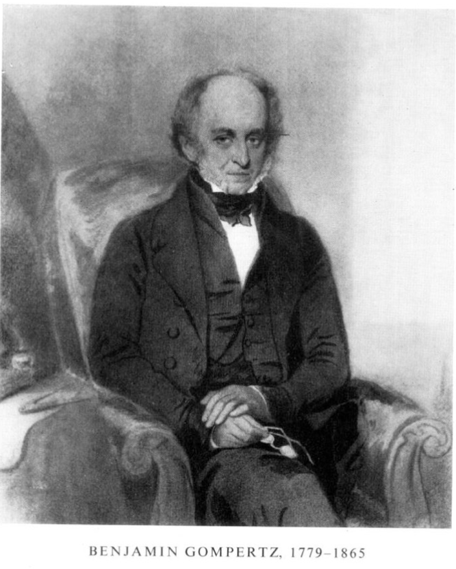
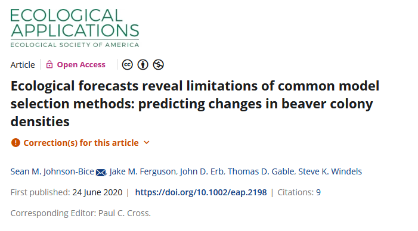
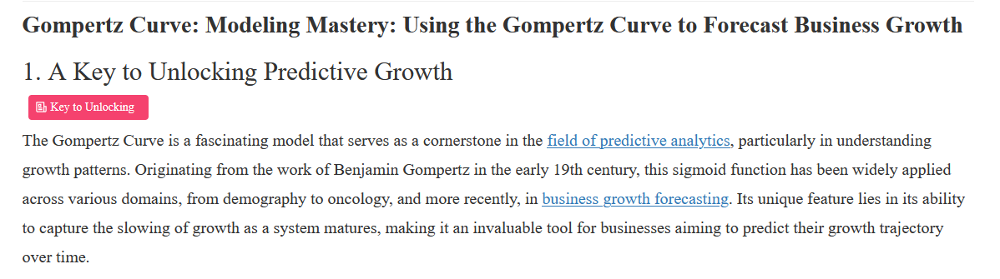
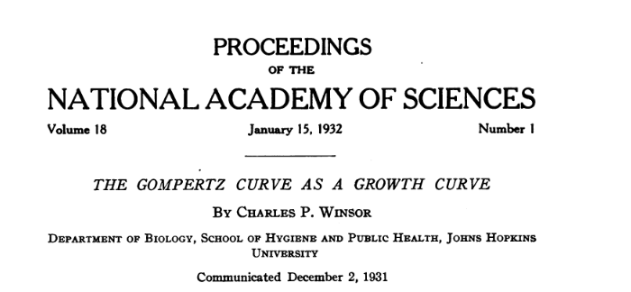
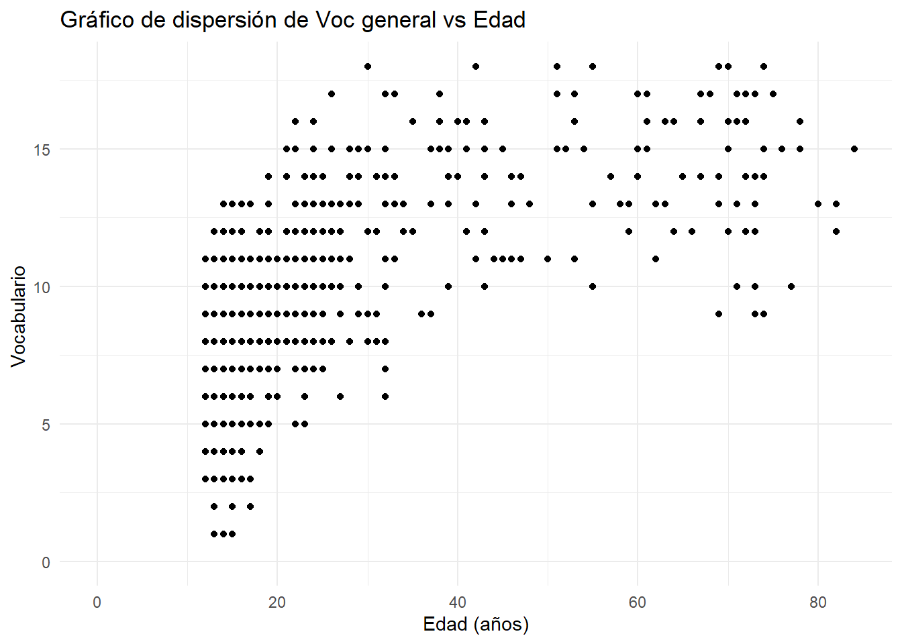
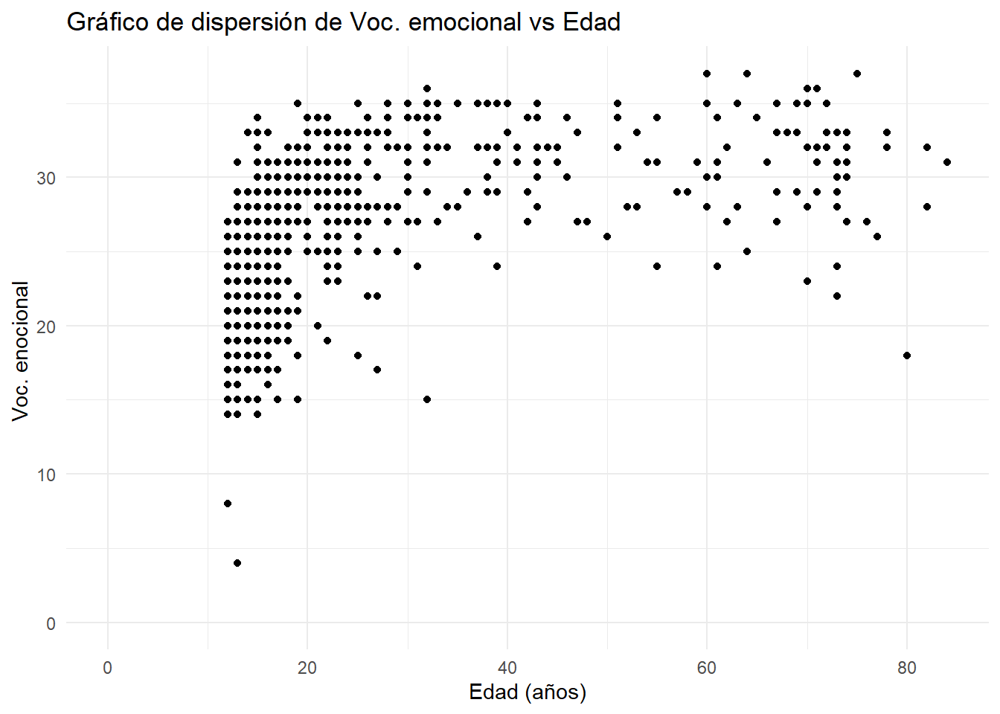
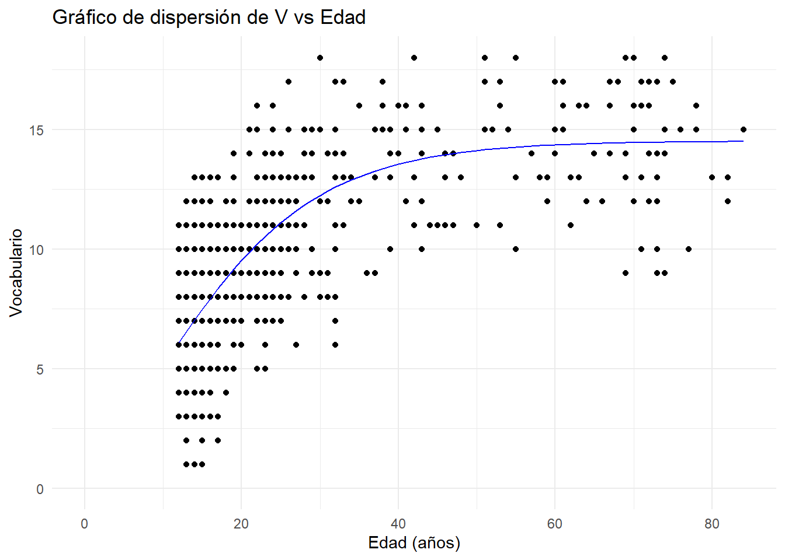
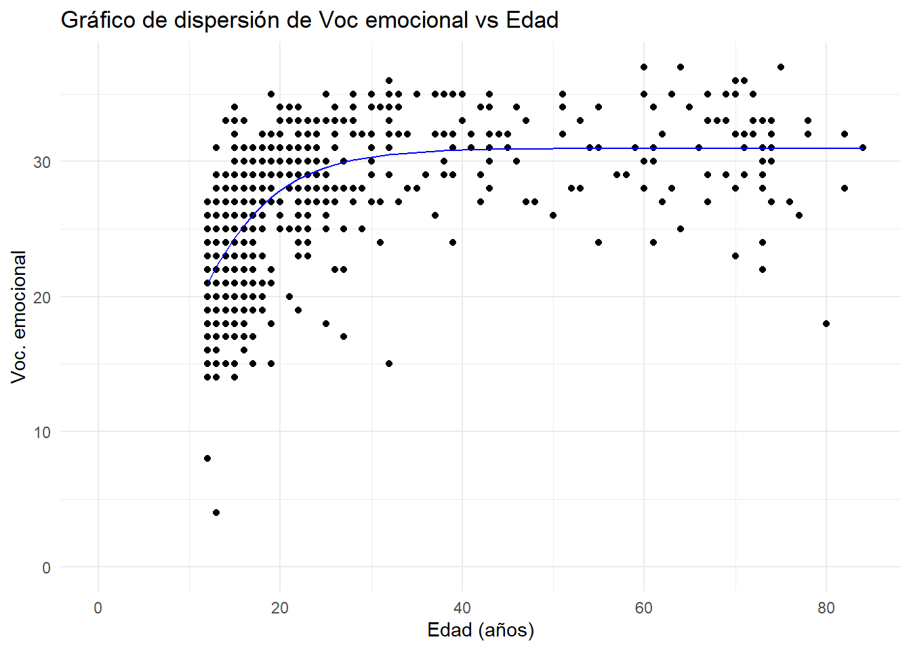
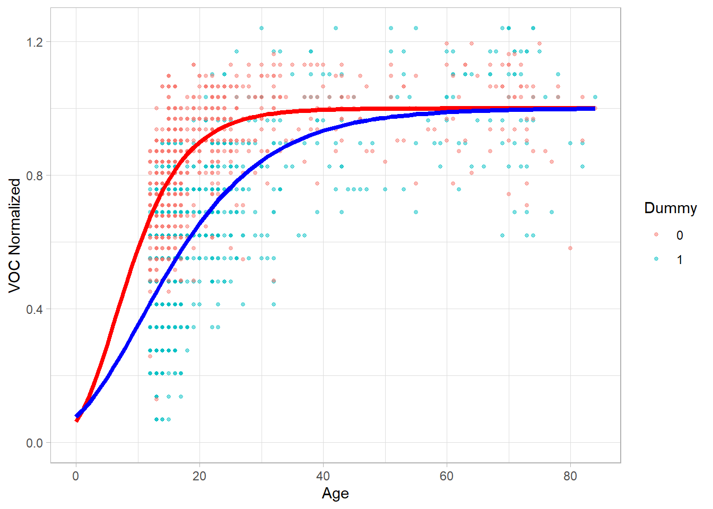
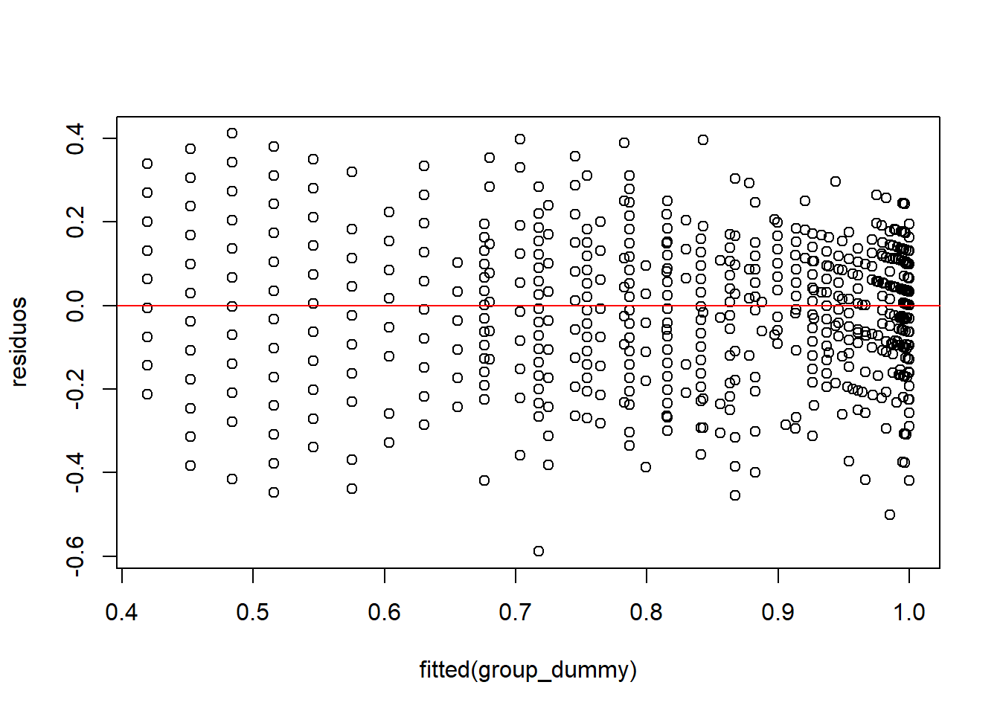

library(readxl)
library(nlme)
library(ggplot2)
library(dplyr)
library(lme4)
library(emmeans)
# Función Gompertz
gompertz <- function(t, A, B, C) {
A * exp(-exp(-B * (t - C)))
}
# Leer datos desde Excel
dataf <- read_excel("basevve.xlsx")IMPLEMENTACIÓN DE COMPARACIONES ENTRE GRUPOS UTILIZANDO LA ECUACIÓN DE GOMPERTZ Y VARIABLES DUMMY.
1 Consejo Nacional de Investigaciones Científicas y Técnicas, Argentina.
Versión html de la presentación al congreso LATIN R 2024:
Conferencia Latinoamericana sobre Uso de R en Investigación + Desarrollo
18 al 22 de noviembre de 2024 - Online
Introducción
Benjamin Gompertz (1779–1865) fue un matemático británico y actuario, conocido principalmente por su trabajo en estadística actuarial y demografía. En 1825, Gompertz propuso la función que llevaría su nombre, un modelo matemático que describe el crecimiento de la mortalidad en función de la edad. Esta ecuación fue inicialmente utilizada para explicar la mortalidad en poblaciones humanas, sugiriendo que esta aumenta exponencialmente con la edad.

Utilidad
La función Gompertz se ha aplicado ampliamente no solo en estudios de mortalidad, sino también en campos como el modelado de crecimiento de tumores,
en modelos poblacionales…

incluso en economía…

y. por supuesto, en estudios de desarrollo

Esto se debe a su capacidad para modelar procesos de crecimiento y declive que tienden a acelerarse o desacelerarse exponencialmente.
¿Por qué es tan común?
Pensemos en un ejemplo de crecimiento exponencial en biología, como el crecimiento de una bacteria. Comenzamos con una bacteria y después de un tiempo x tenemos 2 bacterias; después de un tiempo 2 x tendremos 4, y así sucesivamente… ya tenemos la parte exponencial del crecimiento. Sin embargo, no existe crecimiento exponencial infinito en el mundo real. En el caso de la biología, por ejemplo, llega un punto en el que se agotan los recursos y el crecimiento comienza a desacelerarse. Esto podría modelarse mediante una función logística, pero las fases de crecimiento exponencial y desaceleración no tienen por qué ser simétricas. Por lo tanto, necesitamos una función logística asimétrica, como la función de Gompertz.
Función de Gompertz (modificada).
\[ \Large F(t) = A \cdot e^{-e^{-K(t - T)}} \]
Donde:
y(t): Representa el valor de la variable en el tiempo t.
A: Es el valor asintótico o el límite superior del crecimiento, que corresponde al valor máximo que la función puede alcanzar.
T: Es un parámetro relacionado con la posición del punto de inflexión. Controla el desplazamiento horizontal de la curva y afecta cuándo ocurre el cambio más rápido en el crecimiento.
K: Es proporcional a la tasa de crecimiento relativo en el punto de inflexión, determina la rapidez con la que ocurre el crecimiento exponencial inicial y la posterior desaceleración.

** esquema extraido de Variability in rat weight gain during development
Datos y código
Cargamos algunas librerías, los datos y definimos la función.
Los datos estarán disponibles de forma pública a través de repositorios permanentes y el GitHub del proyecto (https://github.com/Vazquez-Borsetti/Emotional-vocabulary-develops-earlier-than-general-vocabulary) una vez que se publiquen los resultados.
veamos la nube de datos del vocabulario general:
# Crear el scatter plot
ggplot(dataf, aes(x = Edad, y = V)) +
geom_point() + # Añadir los puntos
labs(title = "Gráfico de dispersión de Voc general vs Edad",
x = "Edad (años)",
y = "Vocabulario ") + # Etiquetas de los ejes
coord_cartesian(xlim = c(0, NA), ylim = c(0, NA)) +
theme_minimal() # Tema limpio
A primera vista, se observa que la variable no sigue una distribución lineal. en el caso del vocabulario emocional se observa un patrón similar.
ggplot(dataf, aes(x = Edad, y = VE)) +
geom_point() + # Añadir los puntos
labs(title = "Gráfico de dispersión de Voc. emocional vs Edad",
x = "Edad (años)",
y = "Voc. enocional ") +
coord_cartesian(xlim = c(0, NA), ylim = c(0, NA)) +
theme_minimal() 
Ajustemos los datos a la funcion de Gompertz
Es importante señalar que debemos proporcionar las condiciones iniciales al modelo para que pueda empezar a ajustar los parámetros. No existe, o al menos no se encontró, una forma estandarizada de determinar estos valores. En este caso, sabemos que A debe aproximarse a los valores máximos, y que el valor de K (denotado como B en este caso) se puede estimar, ya que sabemos que la tasa máxima de incremento es igual a K⋅A/e. Por último, el tiempo T se da cuando f(t)=A/e, por lo que no es difícil hacer una aproximación visual.
# Ajuste no lineal
fit_v <- nls(V ~ gompertz(Edad, A, B, C), data = dataf, start = list(A = 14, B = 0.09, C = 10))
fit_ve <- nls(VE ~ gompertz(Edad, A, B, C), data = dataf, start = list(A = 14, B = 0.09, C = 10))
# Resultados del ajuste
print(summary(fit_v))
Formula: V ~ gompertz(Edad, A, B, C)
Parameters:
Estimate Std. Error t value Pr(>|t|)
A 14.515810 0.282035 51.47 <2e-16 ***
B 0.090486 0.007583 11.93 <2e-16 ***
C 10.449953 0.404963 25.80 <2e-16 ***
---
Signif. codes: 0 '***' 0.001 '**' 0.01 '*' 0.05 '.' 0.1 ' ' 1
Residual standard error: 2.453 on 835 degrees of freedom
Number of iterations to convergence: 2
Achieved convergence tolerance: 5.349e-06print(summary(fit_ve))
Formula: VE ~ gompertz(Edad, A, B, C)
Parameters:
Estimate Std. Error t value Pr(>|t|)
A 30.96582 0.32455 95.410 <2e-16 ***
B 0.16340 0.01682 9.713 <2e-16 ***
C 6.25454 0.71572 8.739 <2e-16 ***
---
Signif. codes: 0 '***' 0.001 '**' 0.01 '*' 0.05 '.' 0.1 ' ' 1
Residual standard error: 3.826 on 835 degrees of freedom
Number of iterations to convergence: 6
Achieved convergence tolerance: 5.072e-07veamos como quedan las curvas ajustadas
# Crear un data frame con las predicciones del modelo ajustado
dataf$predicted_V <- predict(fit_v, newdata = dataf)
# Graficar los puntos y la curva ajustada
ggplot(dataf, aes(x = Edad, y = V)) +
geom_point() + # Añadir los puntos
geom_line(aes(y = predicted_V), color = "blue") + # Añadir la curva ajustada
labs(title = "Gráfico de dispersión de V vs Edad",
x = "Edad (años)",
y = "Vocabulario") + # Etiquetas de los ejes
coord_cartesian(xlim = c(0, NA), ylim = c(0, NA)) + # Límites de los ejes
theme_minimal() # Tema limpio
y también con el vocabulario emocional
# Crear un data frame con las predicciones del modelo ajustado
dataf$predicted_VE <- predict(fit_ve, newdata = dataf)
# Graficar los puntos y la curva ajustada
ggplot(dataf, aes(x = Edad, y = VE)) +
geom_point() + # Añadir los puntos
geom_line(aes(y = predicted_VE), color = "blue") + # Añadir la curva ajustada
labs(title = "Gráfico de dispersión de Voc emocional vs Edad",
x = "Edad (años)",
y = "Voc. emocional") + # Etiquetas de los ejes
coord_cartesian(xlim = c(0, NA), ylim = c(0, NA)) + # Límites de los ejes
theme_minimal() # Tema limpio
Tanto la evidencia analítica como la visual indican un buen ajuste de nuestro modelo a los datos.
Ahora, con el fin de comparar ambos tipos de vocabulario vamos a crear las variables dummy. Además, ya que las escalas de ambos tests no son comparables debemos normalizar los datos. Para esto, dividiremos la variable dependiente por el valor A (la asíntota máxima) de cada tipo de vocabulario. Y realizamos un gráfico con ambas curvas.
# Crear vectores dummy
dummy_vector1 <- rep(1, length(dataf$V))
dummy_vector2 <- rep(0, length(dataf$VE))
# Crear un nuevo data frame con nombres de columnas actualizados
nuevo_df <- data.frame(
voc_norm = c((dataf$V / coef(fit_v)[1]), (dataf$VE / coef(fit_ve)[1])),
dummy = c(dummy_vector1, dummy_vector2),
age = c(dataf$Edad, dataf$Edad),
ID = c(dataf$ID, dataf$ID)
)
# Separar los datos en función de la variable dummy
data_dummy_0 <- subset(nuevo_df, dummy == 0)
data_dummy_1 <- subset(nuevo_df, dummy == 1)
# Ajustar un modelo a cada subconjunto de datos usando la función gompertz
fit_dummy_0 <- nls(voc_norm ~ gompertz(age, A, B, C), data = data_dummy_0, start = list(A = 1, B = 0.09, C = 10))
fit_dummy_1 <- nls(voc_norm ~ gompertz(age, A, B, C), data = data_dummy_1, start = list(A = 1, B = 0.09, C = 10))
# Crear rango de edad para la extrapolación
extrapolation_range <- seq(0, max(nuevo_df$age), by = 1)
# Predecir valores de voc_norm en función de la edad para cada modelo
pred_dummy_0 <- predict(fit_dummy_0, newdata = data.frame(age = extrapolation_range))
pred_dummy_1 <- predict(fit_dummy_1, newdata = data.frame(age = extrapolation_range))
# Crear el gráfico
ggplot(nuevo_df, aes(x = age, y = voc_norm, color = as.factor(dummy))) +
# Graficar puntos originales
geom_point(alpha = 0.5, size = 1) +
# Graficar línea ajustada para dummy = 0
geom_line(data = data.frame(age = extrapolation_range, voc_norm = pred_dummy_0),
aes(x = age, y = voc_norm), color = "red", linewidth = 1.5) +
# Graficar línea ajustada para dummy = 1
geom_line(data = data.frame(age = extrapolation_range, voc_norm = pred_dummy_1),
aes(x = age, y = voc_norm), color = "blue", linewidth = 1.5) +
labs(x = "Age", y = "VOC Normalized", color = "Dummy") +
coord_cartesian(xlim = c(0, NA), ylim = c(0, NA)) +
theme_light()
De estos gráficos, parece desprenderse que el vocabulario emocional se desarrolla antes que el vocabulario general. Para evaluar la significancia y validar esta afirmación, existen varias alternativas. En este trabajo, decidimos implementar una ecuación con la función de Gompertz y variables dummy. De forma similar a los modelos lineales.
Función de Gompertz con variables dummy:
\[ (A + cat × coef_A) × exp(-exp(-(K + cat × coef_K) × (t - (T + cat × coef_T)))) \]
Donde cat es la variable dummy, los coeficientes indican el grado de incremento necesario para que el parámetro específico describa la incorporación de la categoría. Cuando cat es 0, se evalúa la ecuación de Gompertz normal en la categoría base, que en este caso es el vocabulario emocional. Cuando cat es 1, se agrega el término con los coeficientes a los parámetros para evaluar cómo afecta el análisis del vocabulario general en lugar del emocional.
gompertz3 <- function(t, cat, A, B, C, coef_A, coef_B, coef_C) {
(A + cat * coef_A) * exp(-exp(-(B + cat * coef_B) * (t - (C + cat * coef_C))))
}
group_dummy <- nls(voc_norm ~ gompertz3(age, dummy,A, B, C,coef_A, coef_B, coef_C), data = nuevo_df,
start = list(A= 30, B = 0.16, C = 6.25,coef_A=0.1, coef_B =-0.07, coef_C = 4.2),
control = nls.control(maxiter = 10000, tol = 1e-04, minFactor = 1e-10))
print(summary(group_dummy))
Formula: voc_norm ~ gompertz3(age, dummy, A, B, C, coef_A, coef_B, coef_C)
Parameters:
Estimate Std. Error t value Pr(>|t|)
A 1.000e+00 1.256e-02 79.640 < 2e-16 ***
B 1.634e-01 2.016e-02 8.107 9.92e-16 ***
C 6.255e+00 8.574e-01 7.294 4.61e-13 ***
coef_A 5.103e-06 2.117e-02 0.000 0.999808
coef_B -7.292e-02 2.122e-02 -3.436 0.000604 ***
coef_C 4.195e+00 9.279e-01 4.521 6.58e-06 ***
---
Signif. codes: 0 '***' 0.001 '**' 0.01 '*' 0.05 '.' 0.1 ' ' 1
Residual standard error: 0.148 on 1670 degrees of freedom
Number of iterations to convergence: 3
Achieved convergence tolerance: 1.951e-05Se observan diferencias significativas en los parámetros K y T, lo que indica que podemos descartar la hipótesis nula de que ambos tipos de lenguaje se desarrollan con el mismo patrón temporal. El lenguaje emocional parece desarrollarse significativamente antes que el lenguaje general.
Evaluemos el modelo
# Extraer residuos
residuos <- residuals(group_dummy)
# Gráfico de residuos
plot(fitted(group_dummy), residuos)
abline(h = 0, col = "red")
Los residuos del modelo no presentan patrones evidentes y están distribuidos de manera aleatoria en torno a cero, lo que sugiere que el ajuste del modelo es adecuado y que los supuestos subyacentes se cumplen razonablemente.
Dado que normalizamos el parámetro A, no sorprende que el coeficiente no sea significativo y sea cercano a cero. El valor de A es 1 porque lo forzamos a ser 1.
Conclusiones
Este método y código son efectivos para realizar comparaciones entre grupos que siguen una distribución de Gompertz.
En el futuro, una vez que se complete la publicación correspondiente, se reformulará este análisis para abordar las medidas repetidas entre sujetos (procedimiento que no se muestra en este momento) y se liberará la base de datos para que esté disponible al dominio público.
Los resultados obtenidos respaldan fuertemente la hipótesis de que el vocabulario emocional se desarrolla antes que el vocabulario general.